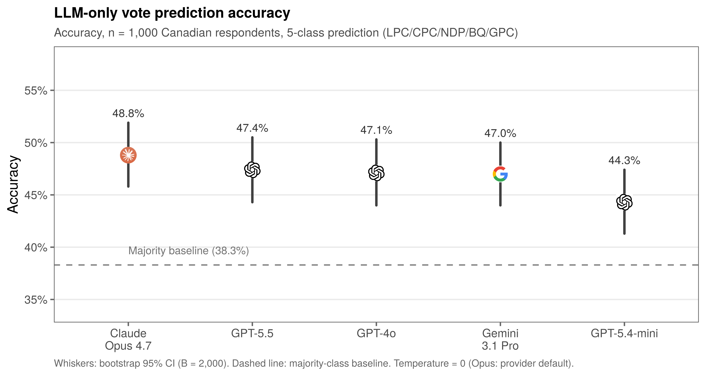
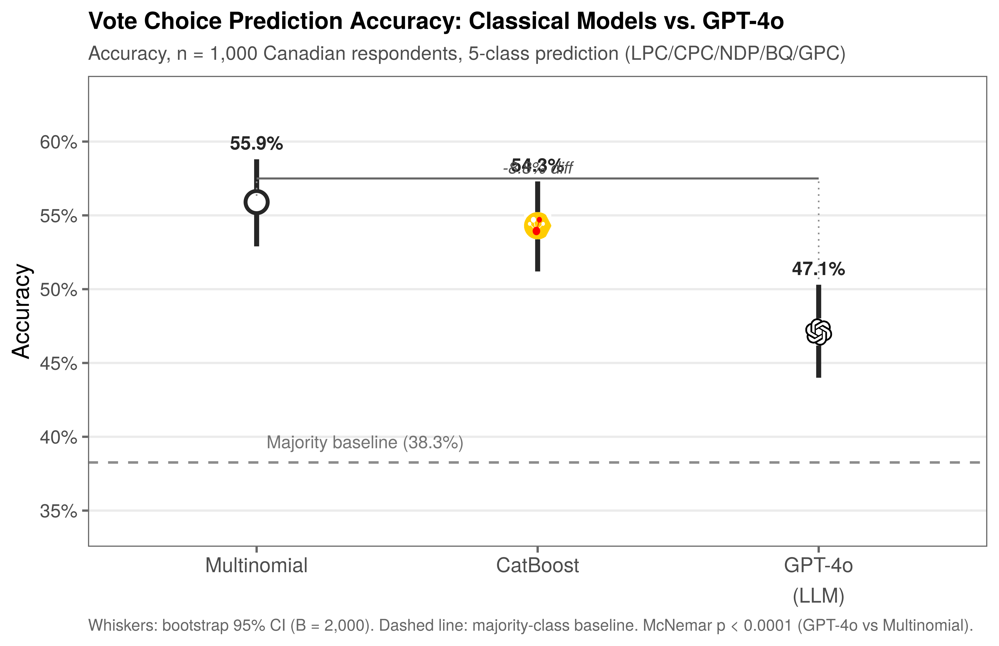
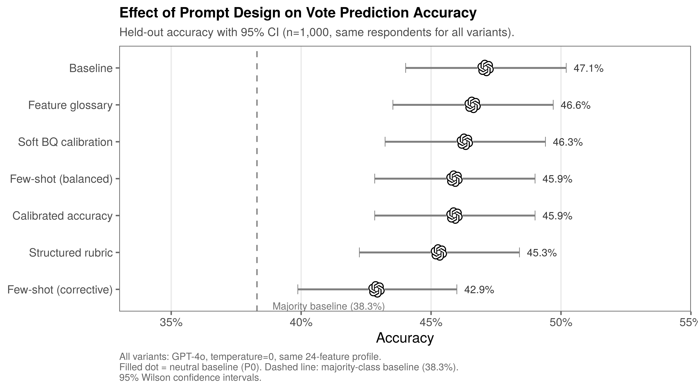
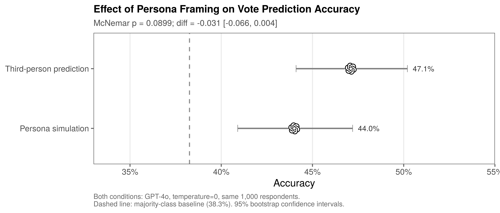
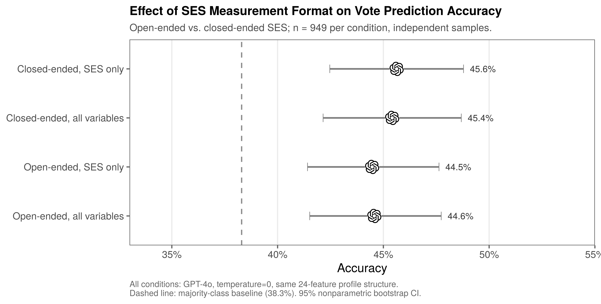
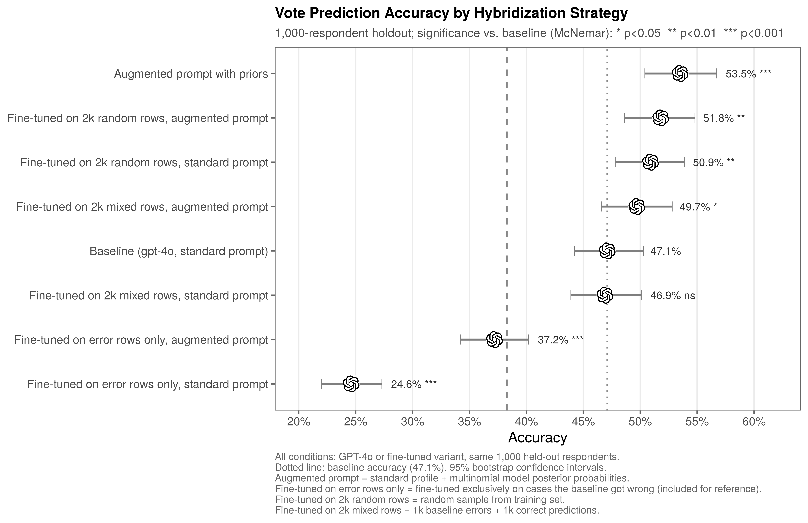
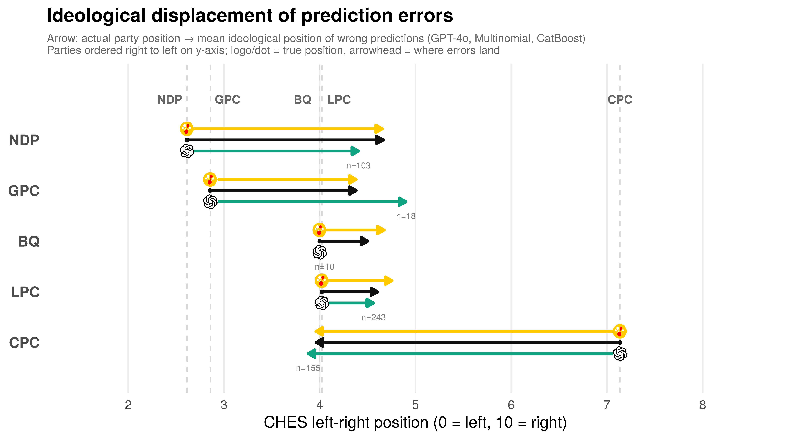
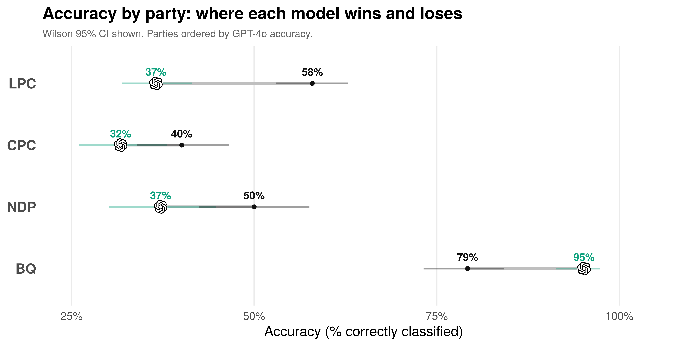
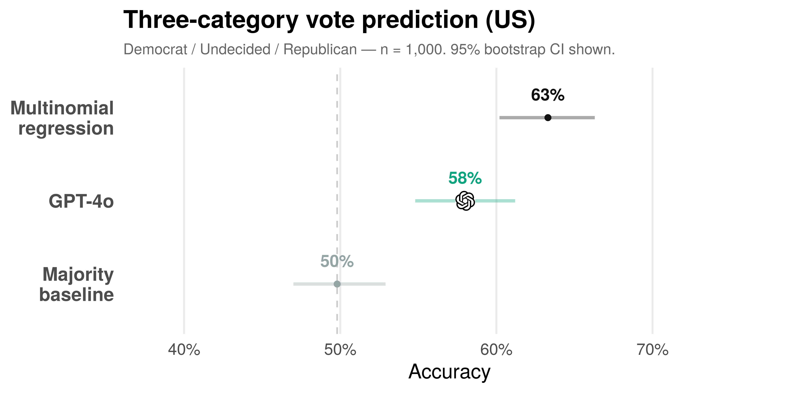

If LLMs can predict vote, it could mean they can infer other hard-to-measure variables from the same respondent profile.
Missing values, skipped questions, and incomplete batteries become candidates for model-assisted imputation.
Forgot to include a variable in your survey? A valid predictor could let you create an approximate version after the fact.
Social media posts and other open-ended traces could become inputs for predicting vote intentions at scale.
LLMs can reproduce subgroup-level opinion distributions under demographic conditioning, but estimates remain sensitive to model choice, prompt wording, and target group.
Argyle et al. 2023 · Santurkar et al. 2023 · Bisbee et al. 2024
Group averages can look plausible while predictions for specific respondents remain weak. Persona prompts often flatten real variation, and multiparty, non-US settings are harder tests.
Röttger et al. 2023 · von der Heyde et al. 2025 · Taday Morocho et al. 2026
| Gap in literature | Our test |
|---|---|
| Aggregate ≠ individual | 1,000-respondent individual-level holdout |
| US ≠ Canada | Datagotchi Canada, 5-party system |
| Demographics ≠ lifestyle | Datagotchi behavioural variables |
Datagotchi Canada - n = 104,564 total respondents.
Evaluation subsample - n = 1,000 held-out respondents.
24 SES + lifestyle features per respondent:
Accuracy with bootstrap 95% CI.
Frozen prompt, temperature 0, identical respondents across all five LLMs.






Fine-tuning moves the needle a bit. The augmented prompt hybrid hits 53.5% - but it is not pure LLM: it feeds multinomial priors into the GPT-4o prompt. To recover the conventional-model gap you have to give the LLM the conventional-model output.



Not high-stakes individual decisions. But for low-stakes imputation, survey repair, and exploratory segmentation, off-the-shelf LLMs are already informative.
Guardrailed assistant -- answers are grounded in the study data only.